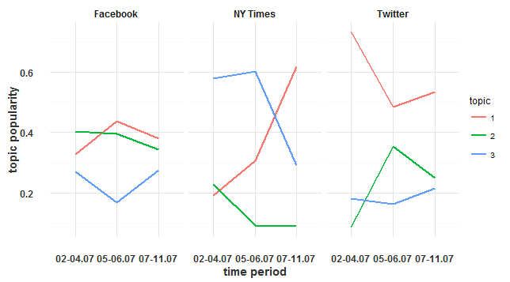

Dallas shooting topic modelling
This is visualisation of VU Amsterdam summer school course "Big Data in Society" final project.
Data about Dallas shooting was gathered from New York Times Twitter,
Facebook page and articles. After data cleaning topic modelling was used. Topic models are here:
Topics popularity over time:

Code for the project is here.
Authors: Pablo De Juan Bernabéu and Risto Hinno.